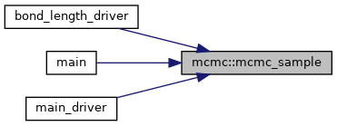

mcmc Module Reference
Functions/Subroutines | |
| real(dp) function, dimension(density_dimension), private | mcmc_propose (x, s, density_dimension) |
| pure real(dp) function, private | mcmc_log_prop_dist (x, y, s) |
| subroutine, private | mcmc_accept (a, x, x_prop, log_rho, s, rho_x, rho_x_prop, dof_coefficients) |
| subroutine | mcmc_sample (samples, log_rho, x_0, n_steps, n_burned, thinning_interval, s, e_code, dof_coefficients, density_dimension, average_accept, seed) |
| subroutine | mcmc_adapt (s_out, log_rho, x_0, n_steps, s_0, e_code, s_max, s_min, memory, adapt_interval, dof_coefficients, density_dimension, seed) |
Function/Subroutine Documentation
◆ mcmc_accept()
|
private |
Definition at line 63 of file MCMC.f90.
References mcmc_log_prop_dist().
Referenced by mcmc_adapt(), and mcmc_sample().
Here is the call graph for this function:

Here is the caller graph for this function:

◆ mcmc_adapt()
| subroutine mcmc::mcmc_adapt | ( | real(dp), intent(out) | s_out, |
| log_rho, | |||
| real(dp), dimension(density_dimension), intent(in) | x_0, | ||
| integer, intent(in) | n_steps, | ||
| real(dp), intent(in) | s_0, | ||
| integer, intent(out) | e_code, | ||
| real(dp), intent(in) | s_max, | ||
| real(dp), intent(in) | s_min, | ||
| real(dp), intent(in) | memory, | ||
| integer, intent(in) | adapt_interval, | ||
| real(dp), dimension(:), intent(in) | dof_coefficients, | ||
| integer, intent(in) | density_dimension, | ||
| integer, dimension(:), intent(in), optional | seed | ||
| ) |
Definition at line 194 of file MCMC.f90.
References mcmc_accept(), and mcmc_propose().
Referenced by loop_test(), main(), and main_driver().
Here is the call graph for this function:

Here is the caller graph for this function:
◆ mcmc_log_prop_dist()
|
private |
Definition at line 50 of file MCMC.f90.
Referenced by mcmc_accept().
Here is the caller graph for this function:

◆ mcmc_propose()
|
private |
Definition at line 20 of file MCMC.f90.
41 xi(density_dimension) = sqrt(-2.0_dp*log(u(density_dimension)))*cos(2.0_dp*pi*u(density_dimension+1))
References shared_constants::pi.
Referenced by mcmc_adapt(), and mcmc_sample().
Here is the caller graph for this function:

◆ mcmc_sample()
| subroutine mcmc::mcmc_sample | ( | real(dp), dimension((n_steps-n_burned)/thinning_interval+1,density_dimension), intent(out) | samples, |
| log_rho, | |||
| real(dp), dimension(density_dimension), intent(in) | x_0, | ||
| integer, intent(in) | n_steps, | ||
| integer, intent(in) | n_burned, | ||
| integer, intent(in) | thinning_interval, | ||
| real(dp), intent(in) | s, | ||
| integer, intent(out) | e_code, | ||
| real(dp), dimension(:), intent(in) | dof_coefficients, | ||
| integer, intent(in) | density_dimension, | ||
| real(dp), intent(out), optional | average_accept, | ||
| integer, dimension(:), intent(in), optional | seed | ||
| ) |
Definition at line 103 of file MCMC.f90.
References mcmc_accept(), and mcmc_propose().
Referenced by loop_test(), main(), and main_driver().
Here is the call graph for this function:

Here is the caller graph for this function:
